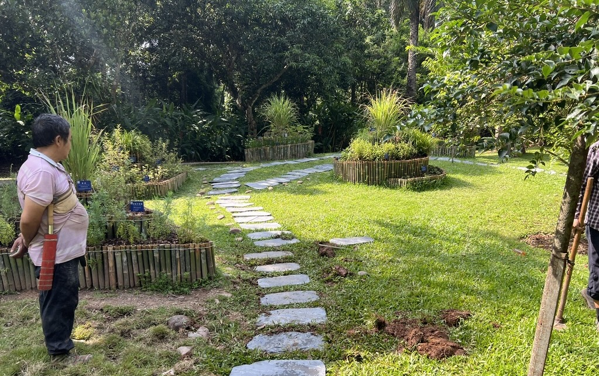
In August of 2026, I spent a month designing, building, and gardening with the Chinese Academy of Science at Xishuangbanna Tropical Botanical Garden.
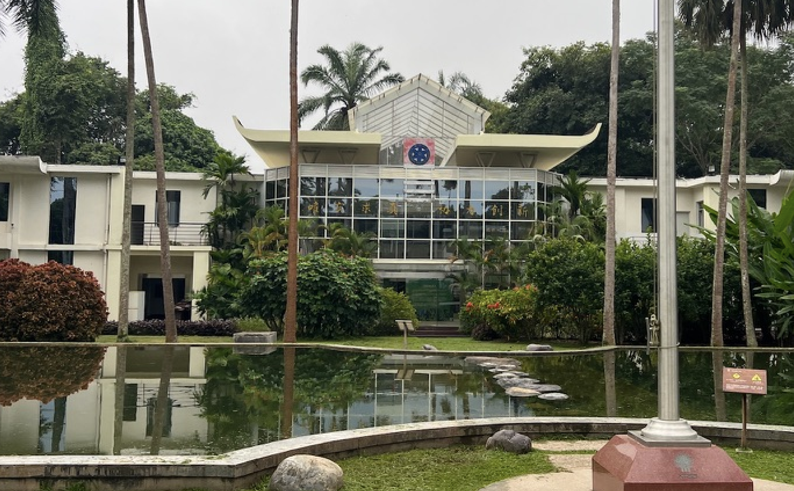
The geographic positioning of the garden, nestled between rivers and mountains downwind of the Tibetan plateau, contributes to a uniquely tropical climate for such a northern latitude.
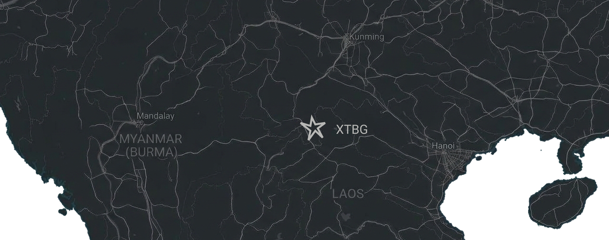
The Distinctive Plant Garden
My primary project was to redesign one of the institution’s most popular gardens, the “Distinctive Plant Garden.”
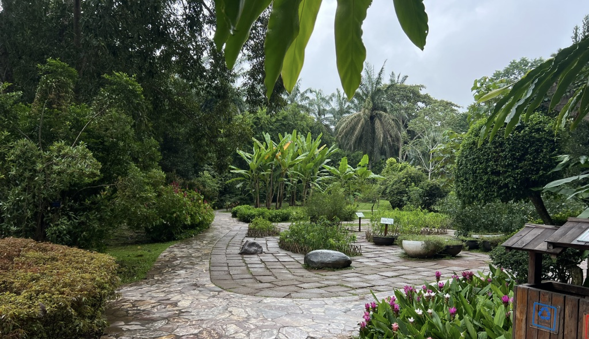
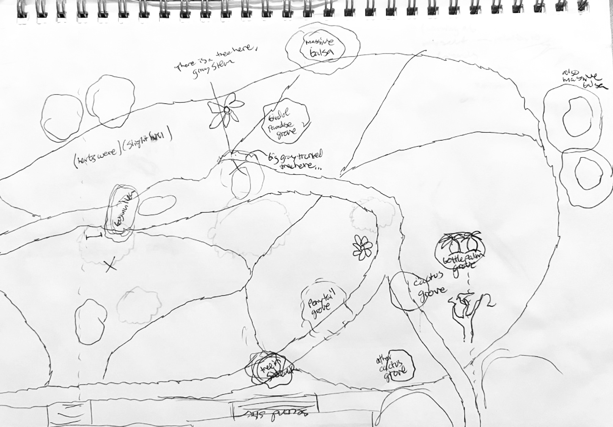
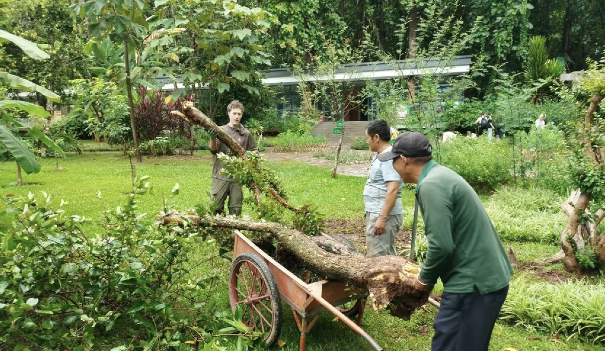
Working with the gardeners each morning gave me a keen eye into how people moved through the garden. I took note of popular features and pathways that caused congestion.
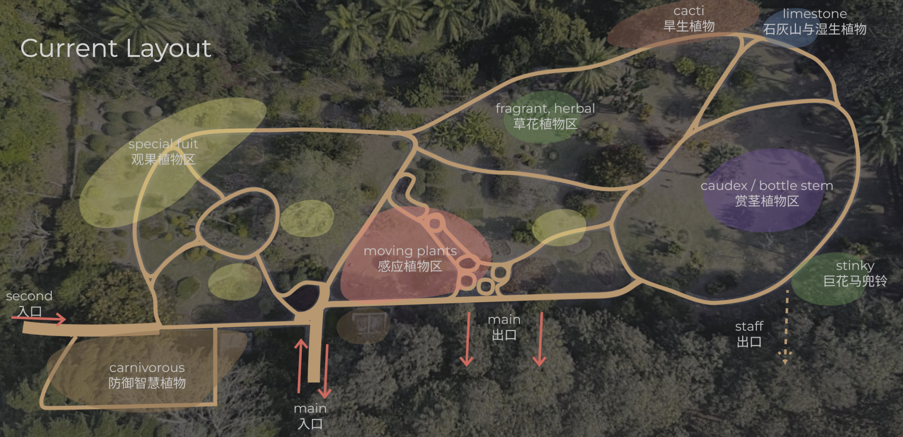
Meandering pathways and scattered, isolated sections lacking a primary circular flow can make it challenging for visitors to find different sections and explore the breadth of the garden. How do I know what section I am in now? Where should I go next?
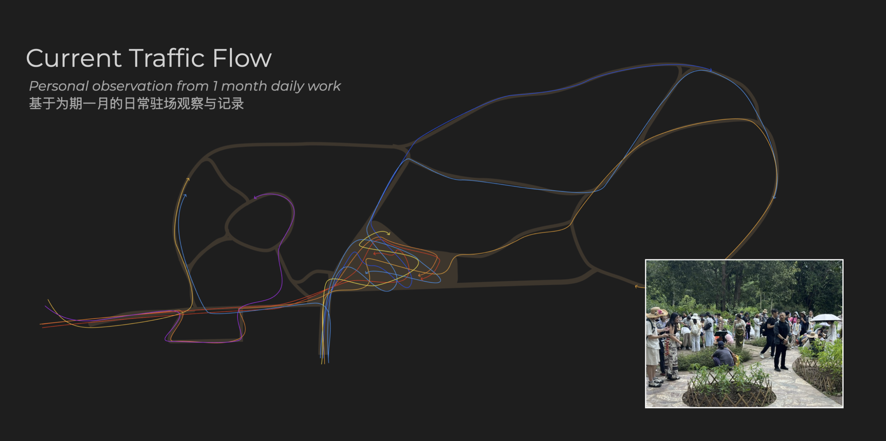
The section featuring plants that move captured my and every other visitor’s attention. It included four types of Mimosa pudica but had a focus around a very unique native plant in the pea family.
Tour guides sing and play music to this “Dancing Grass,” creating quite the spectacle.
The native Dai people in the area have a popular legend about a girl who was an incredible dancer. After tragically drowning in the surrounding river, this special dancing plant began sprouting all along the river and her passion and spirit lives on through them.
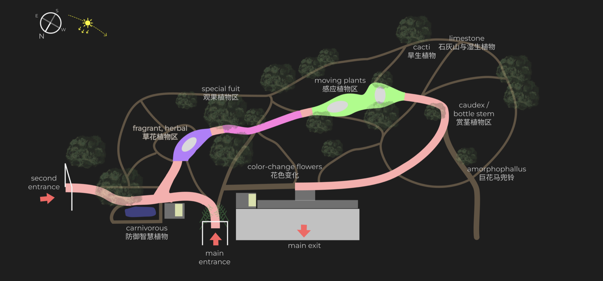
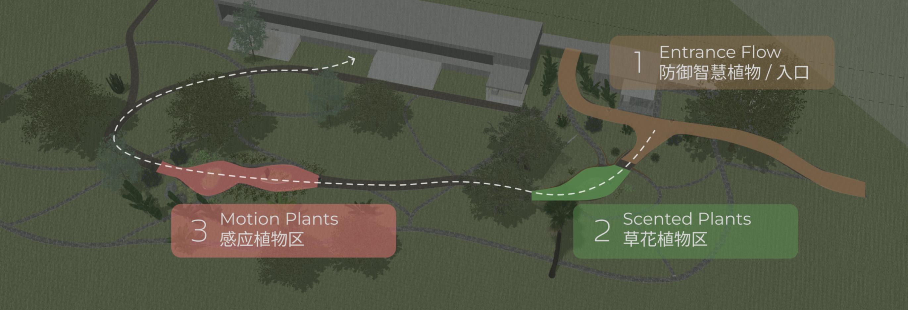
In the afternoons, I used SketchUp to develop a plan for a centralized pathway that encouraged a smoother flow of visitors throughout the garden and ease the bottlenecking that was happening at the entryways. The majority of the garden would be left untouched to keep conscious of cost and preserve already established and effective areas.
My proposal included the suggestion to commission a local Dai sculptor to create a resemblance of the legendary dancing girl, in addition to raising the pathway-lining beds.
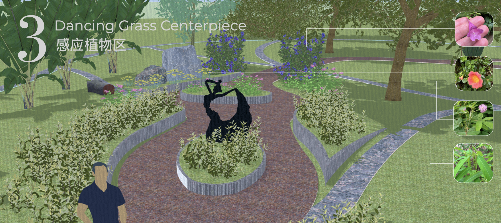
Though this large redesign proposal is still under discussion, I did get to design and build several improvements on site, including a nepenthes installation and pathway through the herbal garden beds.
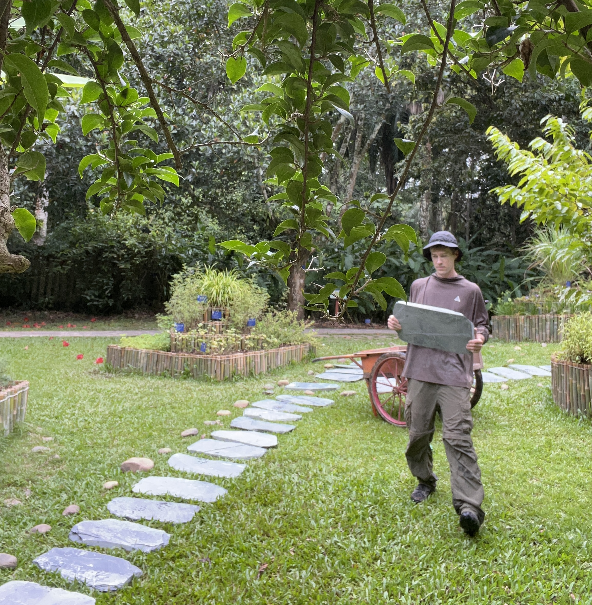
In discussions with the garden manager troubleshooting why the nepenthes pitchers were not growing, we agreed to a test of giving them more light.
Salvaging a branch cut from the surrounding dipterocarp forest, we mounted large native nepenthes specimens around the carnivorous plant pond where they could receive more light.
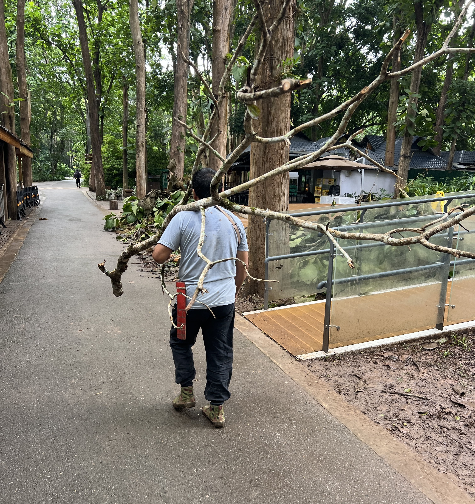
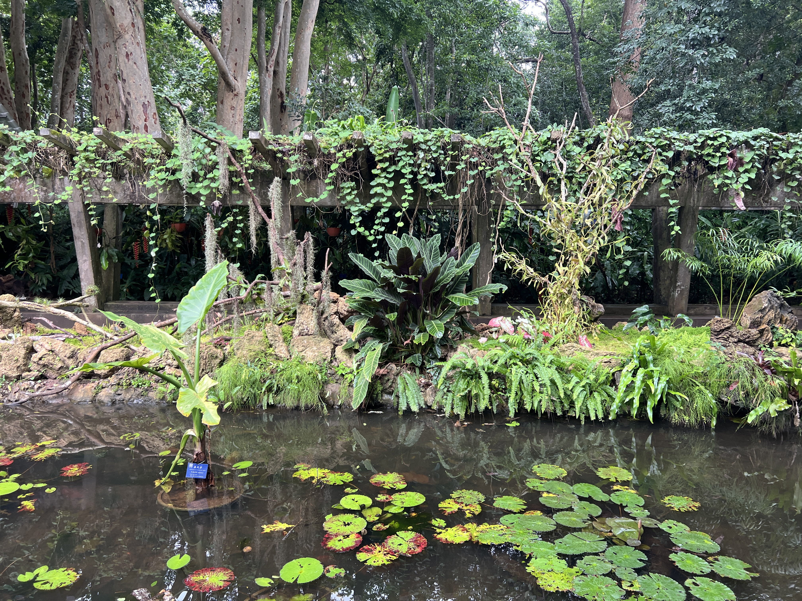
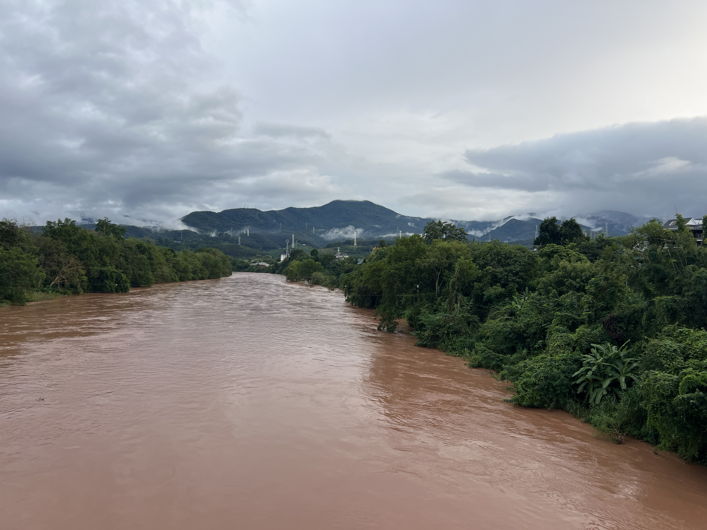
A huge thank you to all the lovely people at XTBG for the opportunity and embrace.